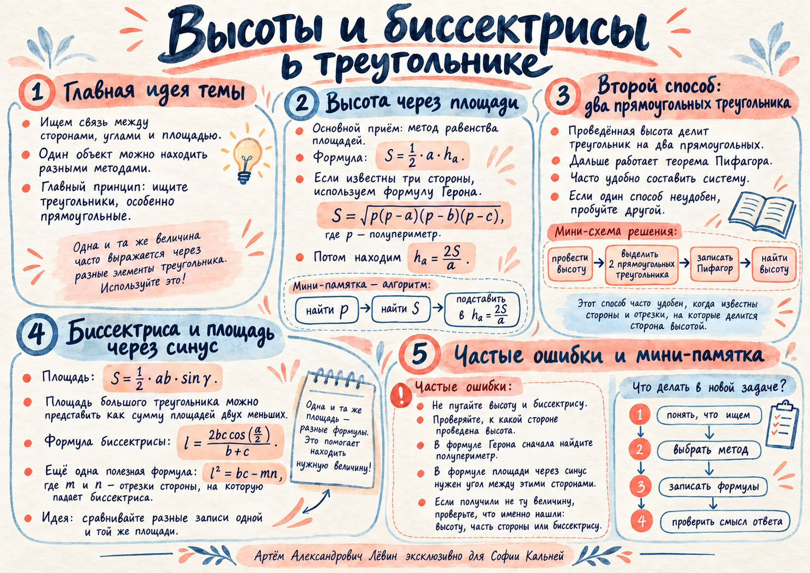

Стратегия
Ищите знакомый треугольник
Один и тот же геометрический объект можно находить разными способами. Для высоты ключевыми становятся площадь и прямоугольные треугольники; для биссектрисы — равные половины угла и разложение площади на две части.
Наглядная памятка занятияакварельный постер

Высота треугольника
Два метода дают один результат
Для треугольника со сторонами 10, 17 и 21 высота к стороне 21 равна 8. Ниже можно переключиться между двумя способами, разобранными на занятии.
Площадь
Две стороны и угол между ними
Формула площади через синус удобна, когда известны две стороны и заключённый между ними угол.
- Выберите две известные стороны.
В формуле должен стоять именно угол между ними. - Подставьте значение синуса.
В примере занятия с b=8, c=11 и A=30° получается S=22. - Используйте площадь дальше.
Через неё можно восстановить высоту или сравнить разные разложения одного треугольника.
Биссектриса
Площадь большого треугольника = сумма двух малых
Пусть AK — биссектриса угла A. Если угол A равен 2α, то площади треугольников ABK и ACK содержат один и тот же множитель sin α.
Контроль
Что проверить до вычислений
Большинство ошибок здесь связано с выбором не той величины или с неверным условием применения формулы.
- К какой стороне проведена высота?
В S=½ahₐ основание a и высота hₐ должны соответствовать друг другу. - Какой угол стоит в формуле площади?
В S=½bc sin A используется угол между выбранными сторонами b и c. - Что именно Вы нашли после системы?
После вычитания уравнений сначала может получиться часть основания, а высоту ещё нужно восстановить по Пифагору. - Какие отрезки входят в lₐ²=bc−mn?
m и n — две части стороны, на которую падает биссектриса. - Имеет ли ответ геометрический смысл?
Длина должна быть положительной, а исходные стороны должны образовывать треугольник.
Путь А · 10 задач
Закрепление
Задачи идут от прямого применения формул к сочетанию нескольких идей. Ответы скрыты до самопроверки.
- В треугольнике стороны равны 6, 8 и 10. Найдите высоту, проведённую к стороне 10.
Ответ: 24/5 = 4,8.
- В треугольнике стороны равны 13, 14 и 15. Найдите высоту, проведённую к стороне 14, используя формулу Герона.
Ответ: 12.
- В треугольнике ABC даны AB=15, BC=20, AC=25. Высота BH проведена к AC. Решите задачу через два прямоугольных треугольника: найдите AH и BH.
Ответ: AH=9, BH=12.
- Две стороны треугольника равны 8 и 11, угол между ними равен 30°. Найдите площадь треугольника.
Ответ: 22.
- Площадь треугольника равна 30. Одна сторона равна 12, а высота проведена к этой стороне. Найдите высоту.
Ответ: 5.
- В треугольнике две стороны, образующие угол 60°, равны 6 и 8. Найдите длину биссектрисы этого угла по формуле через косинус половины угла.
Ответ: 24√3/7.
- В треугольнике ABC биссектриса AK проведена к стороне BC. Известно: AB=10, AC=15, BC=20. Найдите BK, KC и AK.
Ответ: BK=8, KC=12, AK=3√6.
- Стороны треугольника равны 7, 8 и 9. Найдите высоту, проведённую к стороне 9. Ответ запишите в точном виде.
Ответ: 8√5/3.
- Две стороны треугольника равны 8 и 10, угол между ними равен 120°. Найдите площадь треугольника.
Ответ: 20√3.
- В треугольнике со сторонами 13, 14, 15 к стороне 14 проведены высота и биссектриса из противоположной вершины. Найдите длины обеих линий.
Ответ: высота 12, биссектриса 3√65/2.
Самопроверка
Отмечено: 0 из 7